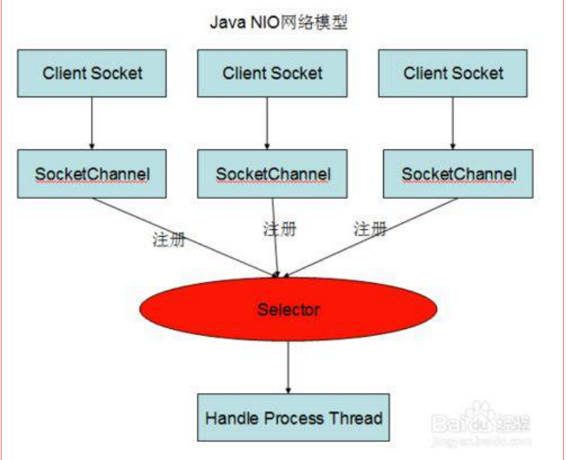
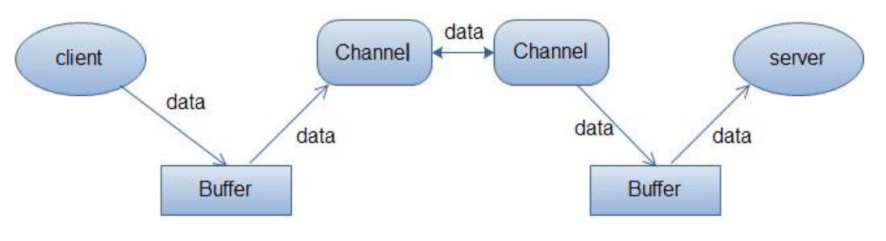

一、AIO（Asynchronous IO）
AIO是一种异步非阻塞的IO模型，异步IO是基于事件和回调机制实现的，也就是应用操作之后会直接返回，不会产生阻塞，当后台处理完成，操作系统会通知相应的线程进行后续的操作。
服务器实现模式为一个有效请求一个线程，客户端的IO请求都是由OS先完成了再通知服务器应用去启动线程进行处理。
AIO方式适用于连接数多且连接比较长的结构。
二、NIO（New IO）

NIO是一种同步非阻塞的IO模型，对于高负载、高并发的网络应用，应使用NIO的非阻塞模型来开发。传统IO基于字节流和字符流进行操作，而NIO基于channel和buffer进行操作，数据从通道读取到缓冲区中或从缓冲区写入通道中。selector用于监听多个通道的事件（如连接打开、数据到达），因此，单个线程可以监听多个数据通道。
服务器实现模式为一个请求一个线程，即客户端发送的连接请求都会注册到多路复用器上，多路复用器轮询到连接有IO请求时才启动一个线程进行处理。
NIO的缓冲区
Java IO面向流意味着每次从流中读一个或多个字节直至读取所有字节，它们没有缓存在任何地方。此外，它不能前后移动流中的数据。如果需要前后移动从流中读取的数据，需要先将它缓存到一个缓冲区。
NIO的缓冲导向方法不同，数据读取到一个它稍后处理的缓冲区，需要时可在缓冲区中前后移动。增加了处理过程的灵活性。但还需要检查是否该缓冲区中包含所有需要处理的数据。而且，需要确保当更多的数据读入缓冲区时，不能覆盖缓冲区里尚未处理的数据。
NIO的非阻塞
NIO的非阻塞模式，使一个线程从某个通道发送请求读取数据，但是它仅能得到目前可用的数据，如果目前没有可用数据时，就什么都不会获取，而不是保持线程阻塞，所以直至数据可以读取之前，该线程可以继续做其他事情。非阻塞写也是如此，一个线程请求写入一些数据到某个通道，但不需要等待它完全写入，这个线程同时可以去做别的事情。
NIO有三大核心组件，分别是：Channel（通道）、Buffer（缓冲区）、Selector（选择器）。NIO是用于连接数目多且比较短的架构。
Channel（通道）：channel是双向的，既可以用来进行读操作，也可以用来进行写操作。NIO中的channel的主要实现有：FileChannel、DatagramChannel、SocketChannel、ServerSocketChannel分别对应文件IO、UDP和TCP（server和client）。
Buffer（缓冲区）：实际上是一个连续的数组。读取或写入的数据都必须经由buffer。在NIO中，buffer是一个顶层父类，他是一个抽象类，常用的子类有：ByteBuffer、IntBuffer、...

Selector（选择区）：Selector类是NIO的核心类，selector能够检测多个注册的通道上是否有事件发生，如果有事件发生，便获取事件然后针对每个事件进行相应的相应处理。
1）NIO与传统IO的区别：
a. NIO是非阻塞的，比如说，单线程中从通道读取数据到buffer，同时可以继续做别的事情，当数据读取到buffer后，线程再继续处理数据，写数据也是一样的。IO流是阻塞的，当一个线程调用read()或write()时，该线程被阻塞，直到数据完全写入。该线程在此期间不能再干任何事情。
b. NIO是面向缓冲区，所有数据都是用缓冲区（buffer）来处理的。在读取数据时，它是直接读到缓冲区中的；在写数据时，写入到缓冲区。IO是面向流的，在IO流中可以将数据直接写入或者数据直接读到stream对象中，虽然stream中也有buffer开头的扩展类，但只是流的包装类，还是从流读到缓冲区。
c. NIO通过通道来读写，通道是双向的，可读可写；而流的读写是单向的。
d. NIO有选择器，选择器用于使用单个线程管理多个通道；而IO没有。
2）缺点：
JDK的NIO底层由epoll实现，该实现饱受诟病的空轮询bug会导致CPU飙升100%。
3）NIO如何实现多路复用？
在多路复用IO模型中，会有一个线程不断去轮询多个socket的状态，只有当socket真正有读写事件时，才真正调用实际的IO读写操作。所以他大大减少了资源占用。在Java NIO中，是通过selector.select()去查询每个通道是否有到达事件，如果没有到达事件，则一直阻塞在那里，因此这种方式会造成用户线程的阻塞。
另外多路复用IO为何比非阻塞IO模型的效率高？因为在非阻塞IO中，不断轮询socket状态是通过用户线程去进行的，而在多路复用IO中，轮询每个socket状态是内核在进行的，这个效率要比用户线程高得多。
三、BIO
BIO是一种同步阻塞的IO模型。数据的读写必须阻塞在一个线程内等待其完成。
服务器实现模式为一个连接一个线程，即客户端有连接请求时服务器端就需要启动一个线程进行处理，如果这个连接不做任何事情会造成不必要的线程开销。
采用BIO通信模型，一般通过在while(true)循环中服务端会调用accept()方法等待接收客户端的连接方式监听请求，一旦接收到连接请求，就可以建立通信套接字进行读写操作，此时不能在接收其他客户端连接请求，只能等待当前连接的客户端操作执行完成。不过可以通过线程池和任务队列来支持多个客户端的连接。
BIO方式适用于连接数比较小且固定的架构。